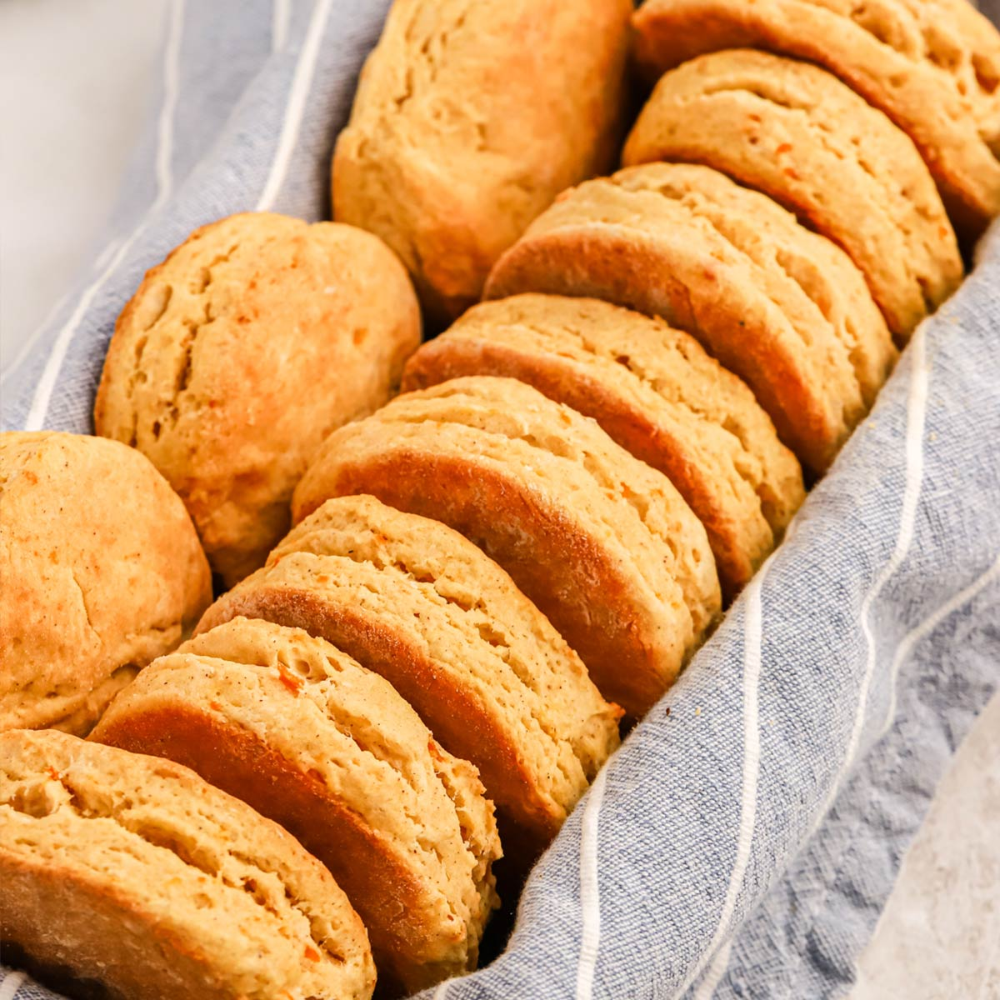

Potato Biscuits Recipe

INGREDIENTS
- 2 ½ cups all-purpose flour
- 2 tablespoons baking powder
- ¼ cup sugar
- ¼ cup butter or margarine
- 1 ½ cups leftover mashed potatoes
- 1 egg, beaten
- ⅓ cup cold water
- ⅓ cup milk
- 2 tablespoons milk, or as needed
Step 1
- Preheat the oven to 450 degrees F (230 degrees C). Line a baking sheet with parchment paper.
Step 2
- In a medium bowl, stir together the flour, baking powder, salt, and sugar. Cut in butter, until pieces of butter are no larger than peas. Use a fork to stir in mashed potatoes, breaking them up into chunks. Make a well in the mixture, and pour in egg, water and milk. Stir into a loose dough using the fork.
Step 3
- Turn dough out onto a floured surface, and knead for 6 or 8 times so the dough holds together. Pat the dough out to about 3/4 inch thickness, and cut into circles with a biscuit cutter or drinking glass. Place biscuits onto the prepared baking sheet. Brush the tops with 2 tablespoons milk.
Step 4
- Bake for 15 to 20 minutes in the preheated oven, or until bottoms are golden.